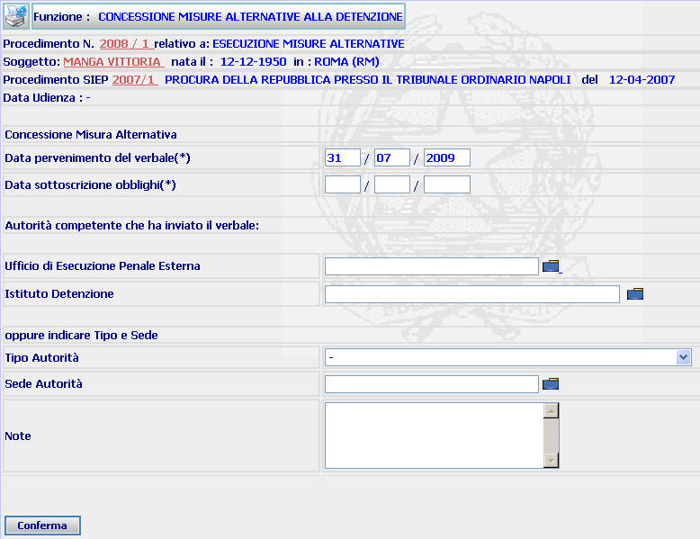

GENERALITA'
INIZIO MISURA ALTERNATIVA: La funzione consente di inserire la data di decorrenza dell'esecuzione della misura alternativa, nonchè l'Autorità che ha inviato il verbale di sottoposizione
LE MASCHERE VIDEO
La funzione in esame viene realizzata attraverso l'utilizzo della seguente maschera mediante la quale è possibile indicare la data di inizio dell'esecuzione della misura, nonchè l'Autorità che ha inviato il verbale di sottoposizione.

COME FARE PER ...
| Per visualizzare il dettaglio del procedimento SIUS l'utente deve cliccare sul link relativo all'Anno/Numero del procedimento Sius evidenziato in rosso; |

| Per visualizzare il dettaglio del soggetto l'utente deve cliccare sul link relativo al cognome/nome del soggetto evidenziato in rosso; |

| Per visualizzare il dettaglio del procedimento Siep l'utente deve cliccare sul link relativo all' Anno/Numero del procedimento Siep evidenziato in rosso; |
|
Per inserire i dati relativi all'inizio della misura alternativa l'utente deve: |
a) compilare i campi relativi alla data di pervenimento del verbale ed a quella di sottoscrizione degli obblighi
b) compilare i campi della sezione "autorità competente che ha inviato il verbale" utilizzando in alternativa quelli relativi all'istituto di detenzione o all'UEPE
o quello delle altre Autorità;
c) Confermare
i dati inseriti cliccare sul bottone

CAMPI
Nella maschera sono presenti i seguenti campi:
| NOME | DESCRIZIONE |
| Data pervenimento verbale | Campo (obbligatorio) nel quale va indicata la data nella quale è pervenuto il verbale di sottoposizione alla misura |
| Data sottoscrizione obblighi | Campo (obbligatorio) nel quale va indicata la data nella quale il condannato ha sottoscritto il verbale contenente le prescrizioni della misura |
| Ufficio di Esecuzione Penale Esterna |
Campo nel quale va inserito
l'UEPE selezionandolo attraverso l'apposito
Pulsante di Ricerca da Lista Predefinita |
| Istituto detenzione |
Campo nel quale va inserito
l'istituto di pena selezionandolo attraverso l'apposito
Pulsante di Ricerca da Lista Predefinita |
| Tipo Autorità | Campo nel quale va indicato il Tipo di Autorità che ha inviato il verbale di inizio/ripresa della sanzione sostitutiva |
| Sede Autorità |
Campo (obbligatorio) nel quale va inserito la sede del Comune (digitandolo per intero
o selezionandolo attraverso l'apposito
Pulsante di Ricerca da Lista Predefinita |
| Note | Campo nel quale possono essere inserite eventuali annotazioni |
PULSANTI
E' presente il seguente pulsante
 ,
che
fa parte del gruppo di
pulsanti di "Uso Comune"
è presente il seguente pulsante:
,
che
fa parte del gruppo di
pulsanti di "Uso Comune"
è presente il seguente pulsante:
|
PULSANTE |
DESCRIZIONE |
|
|
A fronte di tale comando, il sistema visualizza la lista predefinita. |
BOTTONI
Oltre ai comandi funzionali relativi al menù verticale è presente il seguente bottone:
|
COMANDI |
DESCRIZIONE |
|
|
A fronte di tale comando, il sistema dopo aver verificato la validità dei dati specificati, presenta la maschera di dettaglio inizio misura alternativa. |